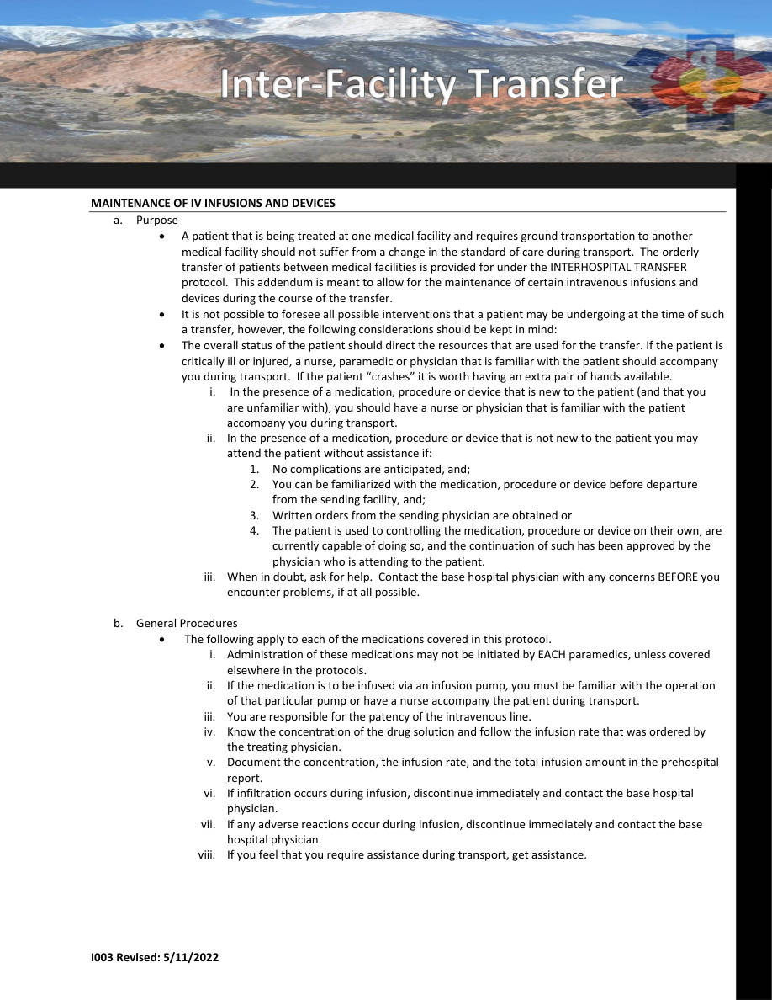
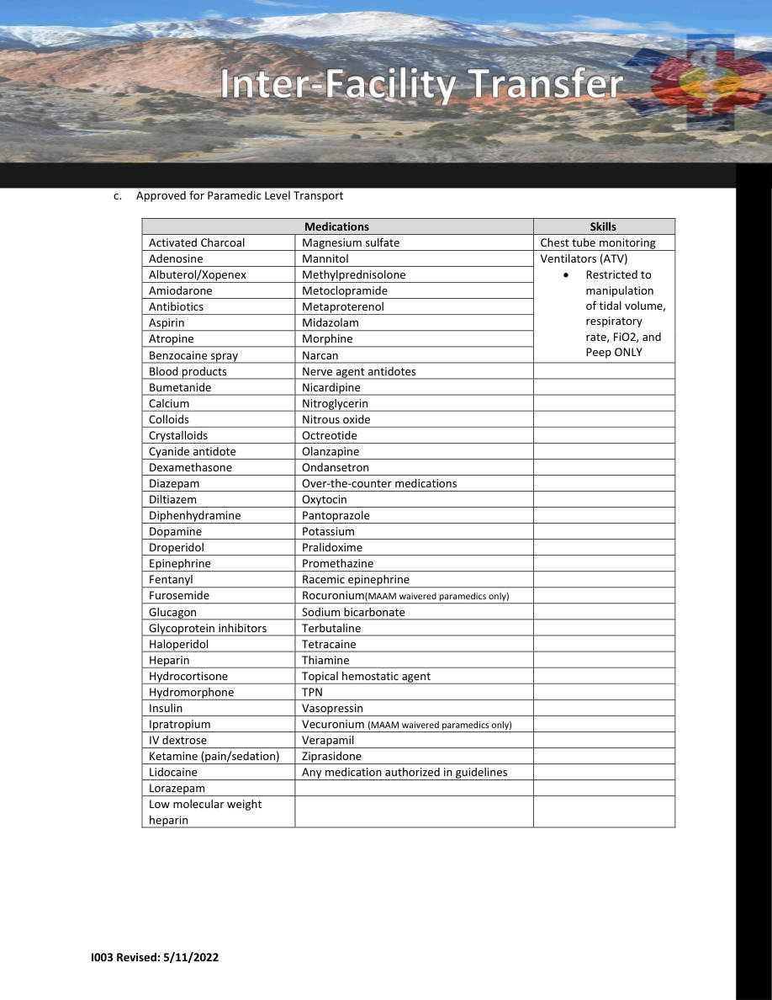
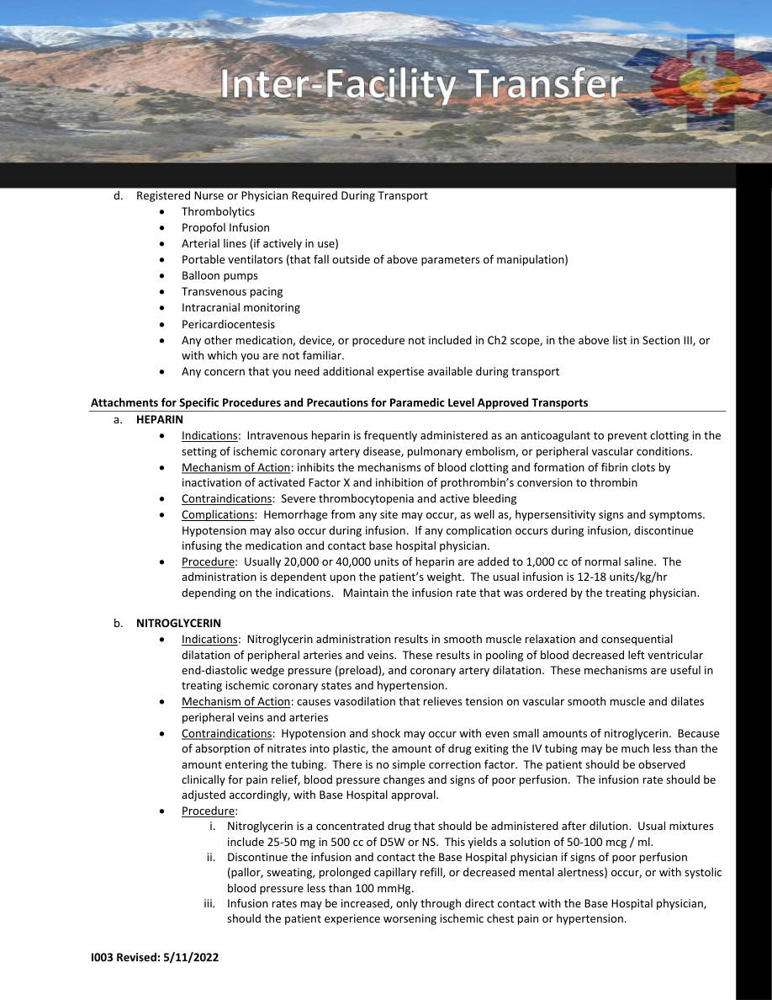
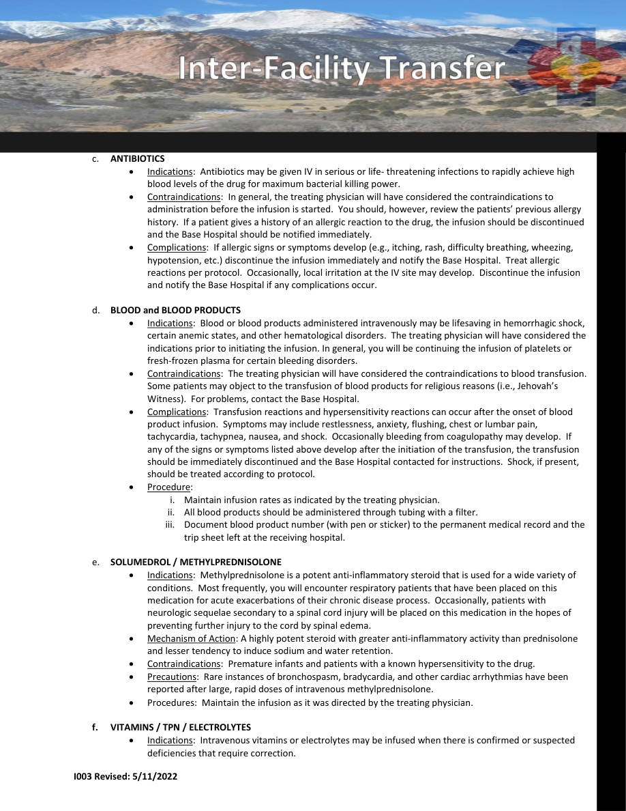
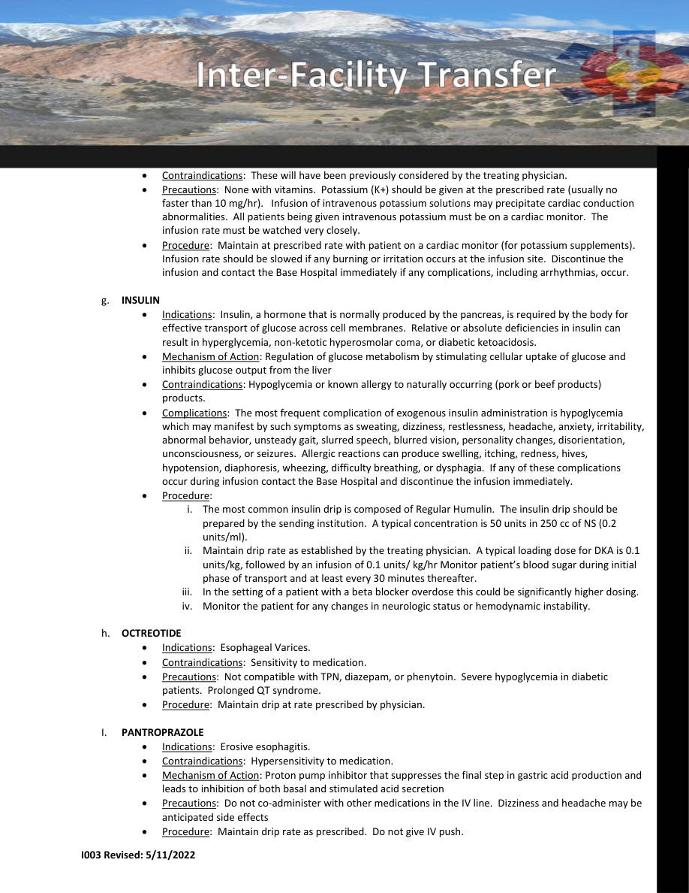
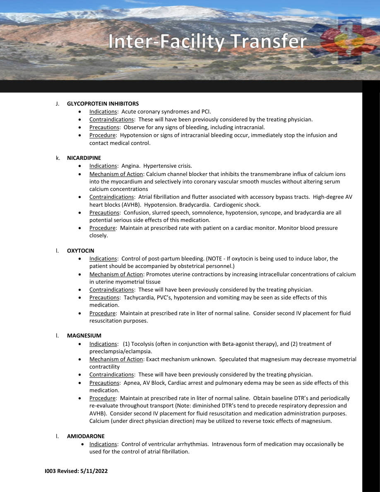
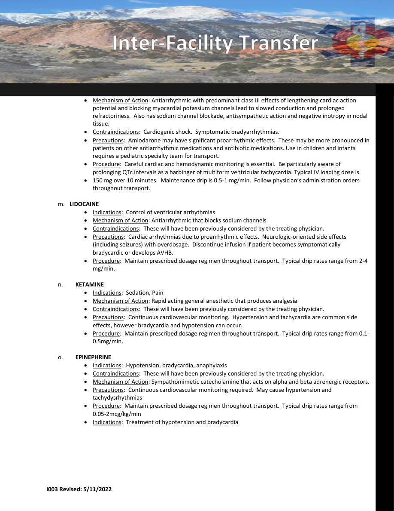

I003 — MAINTENANCE OF IV INFUSIONS AND DEVICES
Special Situations • Pages 146-152
Use the scanned pages to see the official tables/charts/algorithms. The extracted text is there for copy/paste and searchability.
Extracted text (page 146)
I003 Revised: 5/11/2022 MAINTENANCE OF IV INFUSIONS AND DEVICES a. Purpose A patient that is being treated at one medical facility and requires ground transportation to another medical facility should not suffer from a change in the standard of care during transport. The orderly transfer of patients between medical facilities is provided for under the INTERHOSPITAL TRANSFER protocol. This addendum is meant to allow for the maintenance of certain intravenous infusions and devices during the course of the transfer. It is not possible to foresee all possible interventions that a patient may be undergoing at the time of such a transfer, however, the following considerations should be kept in mind: The overall status of the patient should direct the resources that are used for the transfer. If the patient is critically ill or injured, a nurse, paramedic or physician that is familiar with the patient should accompany you during transport. If the patient “crashes” it is worth having an extra pair of hands available. i. In the presence of a medication, procedure or device that is new to the patient (and that you are unfamiliar with), you should have a nurse or physician that is familiar with the patient accompany you during transport. ii. In the presence of a medication, procedure or device that is not new to the patient you may attend the patient without assistance if: 1. No complications are anticipated, and; 2. You can be familiarized with the medication, procedure or device before departure from the sending facility, and; 3. Written orders from the sending physician are obtained or 4. The patient is used to controlling the medication, procedure or device on their own, are currently capable of doing so, and the continuation of such has been approved by the physician who is attending to the patient. iii. When in doubt, ask for help. Contact the base hospital physician with any concerns BEFORE you encounter problems, if at all possible. b. General Procedures The following apply to each of the medications covered in this protocol. i. Administration of these medications may not be initiated by EACH paramedics, unless covered elsewhere in the protocols. ii. If the medication is to be infused via an infusion pump, you must be familiar with the operation of that particular pump or have a nurse accompany the patient during transport. iii. You are responsible for the patency of the intravenous line. iv. Know the concentration of the drug solution and follow the infusion rate that was ordered by the treating physician. v. Document the concentration, the infusion rate, and the total infusion amount in the prehospital report. vi. If infiltration occurs during infusion, discontinue immediately and contact the base hospital physician. vii. If any adverse reactions occur during infusion, discontinue immediately and contact the base hospital physician. viii. If you feel that you require assistance during transport, get assistance.
Extracted text (page 147)
I003 Revised: 5/11/2022 c. Approved for Paramedic Level Transport Medications Skills Activated Charcoal Magnesium sulfate Chest tube monitoring Adenosine Mannitol Ventilators (ATV) Restricted to manipulation of tidal volume, respiratory rate, FiO2, and Peep ONLY Albuterol/Xopenex Methylprednisolone Amiodarone Metoclopramide Antibiotics Metaproterenol Aspirin Midazolam Atropine Morphine Benzocaine spray Narcan Blood products Nerve agent antidotes Bumetanide Nicardipine Calcium Nitroglycerin Colloids Nitrous oxide Crystalloids Octreotide Cyanide antidote Olanzapine Dexamethasone Ondansetron Diazepam Over‐the‐counter medications Diltiazem Oxytocin Diphenhydramine Pantoprazole Dopamine Potassium Droperidol Pralidoxime Epinephrine Promethazine Fentanyl Racemic epinephrine Furosemide Rocuronium(MAAM waivered paramedics only) Glucagon Sodium bicarbonate Glycoprotein inhibitors Terbutaline Haloperidol Tetracaine Heparin Thiamine Hydrocortisone Topical hemostatic agent Hydromorphone TPN Insulin Vasopressin Ipratropium Vecuronium (MAAM waivered paramedics only) IV dextrose Verapamil Ketamine (pain/sedation) Ziprasidone Lidocaine Any medication authorized in guidelines Lorazepam Low molecular weight heparin
Extracted text (page 148)
I003 Revised: 5/11/2022 d. Registered Nurse or Physician Required During Transport Thrombolytics Propofol Infusion Arterial lines (if actively in use) Portable ventilators (that fall outside of above parameters of manipulation) Balloon pumps Transvenous pacing Intracranial monitoring Pericardiocentesis Any other medication, device, or procedure not included in Ch2 scope, in the above list in Section III, or with which you are not familiar. Any concern that you need additional expertise available during transport Attachments for Specific Procedures and Precautions for Paramedic Level Approved Transports a. HEPARIN Indications: Intravenous heparin is frequently administered as an anticoagulant to prevent clotting in the setting of ischemic coronary artery disease, pulmonary embolism, or peripheral vascular conditions. Mechanism of Action: inhibits the mechanisms of blood clotting and formation of fibrin clots by inactivation of activated Factor X and inhibition of prothrombin’s conversion to thrombin Contraindications: Severe thrombocytopenia and active bleeding Complications: Hemorrhage from any site may occur, as well as, hypersensitivity signs and symptoms. Hypotension may also occur during infusion. If any complication occurs during infusion, discontinue infusing the medication and contact base hospital physician. Procedure: Usually 20,000 or 40,000 units of heparin are added to 1,000 cc of normal saline. The administration is dependent upon the patient’s weight. The usual infusion is 12‐18 units/kg/hr depending on the indications. Maintain the infusion rate that was ordered by the treating physician. b. NITROGLYCERIN Indications: Nitroglycerin administration results in smooth muscle relaxation and consequential dilatation of peripheral arteries and veins. These results in pooling of blood decreased left ventricular end‐diastolic wedge pressure (preload), and coronary artery dilatation. These mechanisms are useful in treating ischemic coronary states and hypertension. Mechanism of Action: causes vasodilation that relieves tension on vascular smooth muscle and dilates peripheral veins and arteries Contraindications: Hypotension and shock may occur with even small amounts of nitroglycerin. Because of absorption of nitrates into plastic, the amount of drug exiting the IV tubing may be much less than the amount entering the tubing. There is no simple correction factor. The patient should be observed clinically for pain relief, blood pressure changes and signs of poor perfusion. The infusion rate should be adjusted accordingly, with Base Hospital approval. Procedure: i. Nitroglycerin is a concentrated drug that should be administered after dilution. Usual mixtures include 25‐50 mg in 500 cc of D5W or NS. This yields a solution of 50‐100 mcg / ml. ii. Discontinue the infusion and contact the Base Hospital physician if signs of poor perfusion (pallor, sweating, prolonged capillary refill, or decreased mental alertness) occur, or with systolic blood pressure less than 100 mmHg. iii. Infusion rates may be increased, only through direct contact with the Base Hospital physician, should the patient experience worsening ischemic chest pain or hypertension.
Extracted text (page 149)
I003 Revised: 5/11/2022 c. ANTIBIOTICS Indications: Antibiotics may be given IV in serious or life‐ threatening infections to rapidly achieve high blood levels of the drug for maximum bacterial killing power. Contraindications: In general, the treating physician will have considered the contraindications to administration before the infusion is started. You should, however, review the patients’ previous allergy history. If a patient gives a history of an allergic reaction to the drug, the infusion should be discontinued and the Base Hospital should be notified immediately. Complications: If allergic signs or symptoms develop (e.g., itching, rash, difficulty breathing, wheezing, hypotension, etc.) discontinue the infusion immediately and notify the Base Hospital. Treat allergic reactions per protocol. Occasionally, local irritation at the IV site may develop. Discontinue the infusion and notify the Base Hospital if any complications occur. d. BLOOD and BLOOD PRODUCTS Indications: Blood or blood products administered intravenously may be lifesaving in hemorrhagic shock, certain anemic states, and other hematological disorders. The treating physician will have considered the indications prior to initiating the infusion. In general, you will be continuing the infusion of platelets or fresh‐frozen plasma for certain bleeding disorders. Contraindications: The treating physician will have considered the contraindications to blood transfusion. Some patients may object to the transfusion of blood products for religious reasons (i.e., Jehovah’s Witness). For problems, contact the Base Hospital. Complications: Transfusion reactions and hypersensitivity reactions can occur after the onset of blood product infusion. Symptoms may include restlessness, anxiety, flushing, chest or lumbar pain, tachycardia, tachypnea, nausea, and shock. Occasionally bleeding from coagulopathy may develop. If any of the signs or symptoms listed above develop after the initiation of the transfusion, the transfusion should be immediately discontinued and the Base Hospital contacted for instructions. Shock, if present, should be treated according to protocol. Procedure: i. Maintain infusion rates as indicated by the treating physician. ii. All blood products should be administered through tubing with a filter. iii. Document blood product number (with pen or sticker) to the permanent medical record and the trip sheet left at the receiving hospital. e. SOLUMEDROL / METHYLPREDNISOLONE Indications: Methylprednisolone is a potent anti‐inflammatory steroid that is used for a wide variety of conditions. Most frequently, you will encounter respiratory patients that have been placed on this medication for acute exacerbations of their chronic disease process. Occasionally, patients with neurologic sequelae secondary to a spinal cord injury will be placed on this medication in the hopes of preventing further injury to the cord by spinal edema. Mechanism of Action: A highly potent steroid with greater anti‐inflammatory activity than prednisolone and lesser tendency to induce sodium and water retention. Contraindications: Premature infants and patients with a known hypersensitivity to the drug. Precautions: Rare instances of bronchospasm, bradycardia, and other cardiac arrhythmias have been reported after large, rapid doses of intravenous methylprednisolone. Procedures: Maintain the infusion as it was directed by the treating physician. f. VITAMINS / TPN / ELECTROLYTES Indications: Intravenous vitamins or electrolytes may be infused when there is confirmed or suspected deficiencies that require correction.
Extracted text (page 150)
I003 Revised: 5/11/2022 Contraindications: These will have been previously considered by the treating physician. Precautions: None with vitamins. Potassium (K+) should be given at the prescribed rate (usually no faster than 10 mg/hr). Infusion of intravenous potassium solutions may precipitate cardiac conduction abnormalities. All patients being given intravenous potassium must be on a cardiac monitor. The infusion rate must be watched very closely. Procedure: Maintain at prescribed rate with patient on a cardiac monitor (for potassium supplements). Infusion rate should be slowed if any burning or irritation occurs at the infusion site. Discontinue the infusion and contact the Base Hospital immediately if any complications, including arrhythmias, occur. g. INSULIN Indications: Insulin, a hormone that is normally produced by the pancreas, is required by the body for effective transport of glucose across cell membranes. Relative or absolute deficiencies in insulin can result in hyperglycemia, non‐ketotic hyperosmolar coma, or diabetic ketoacidosis. Mechanism of Action: Regulation of glucose metabolism by stimulating cellular uptake of glucose and inhibits glucose output from the liver Contraindications: Hypoglycemia or known allergy to naturally occurring (pork or beef products) products. Complications: The most frequent complication of exogenous insulin administration is hypoglycemia which may manifest by such symptoms as sweating, dizziness, restlessness, headache, anxiety, irritability, abnormal behavior, unsteady gait, slurred speech, blurred vision, personality changes, disorientation, unconsciousness, or seizures. Allergic reactions can produce swelling, itching, redness, hives, hypotension, diaphoresis, wheezing, difficulty breathing, or dysphagia. If any of these complications occur during infusion contact the Base Hospital and discontinue the infusion immediately. Procedure: i. The most common insulin drip is composed of Regular Humulin. The insulin drip should be prepared by the sending institution. A typical concentration is 50 units in 250 cc of NS (0.2 units/ml). ii. Maintain drip rate as established by the treating physician. A typical loading dose for DKA is 0.1 units/kg, followed by an infusion of 0.1 units/ kg/hr Monitor patient’s blood sugar during initial phase of transport and at least every 30 minutes thereafter. iii. In the setting of a patient with a beta blocker overdose this could be significantly higher dosing. iv. Monitor the patient for any changes in neurologic status or hemodynamic instability. h. OCTREOTIDE Indications: Esophageal Varices. Contraindications: Sensitivity to medication. Precautions: Not compatible with TPN, diazepam, or phenytoin. Severe hypoglycemia in diabetic patients. Prolonged QT syndrome. Procedure: Maintain drip at rate prescribed by physician. I. PANTROPRAZOLE Indications: Erosive esophagitis. Contraindications: Hypersensitivity to medication. Mechanism of Action: Proton pump inhibitor that suppresses the final step in gastric acid production and leads to inhibition of both basal and stimulated acid secretion Precautions: Do not co‐administer with other medications in the IV line. Dizziness and headache may be anticipated side effects Procedure: Maintain drip rate as prescribed. Do not give IV push.
Extracted text (page 151)
I003 Revised: 5/11/2022 J. GLYCOPROTEIN INHIBITORS Indications: Acute coronary syndromes and PCI. Contraindications: These will have been previously considered by the treating physician. Precautions: Observe for any signs of bleeding, including intracranial. Procedure: Hypotension or signs of intracranial bleeding occur, immediately stop the infusion and contact medical control. k. NICARDIPINE Indications: Angina. Hypertensive crisis. Mechanism of Action: Calcium channel blocker that inhibits the transmembrane influx of calcium ions into the myocardium and selectively into coronary vascular smooth muscles without altering serum calcium concentrations Contraindications: Atrial fibrillation and flutter associated with accessory bypass tracts. High‐degree AV heart blocks (AVHB). Hypotension. Bradycardia. Cardiogenic shock. Precautions: Confusion, slurred speech, somnolence, hypotension, syncope, and bradycardia are all potential serious side effects of this medication. Procedure: Maintain at prescribed rate with patient on a cardiac monitor. Monitor blood pressure closely. l. OXYTOCIN Indications: Control of post‐partum bleeding. (NOTE ‐ If oxytocin is being used to induce labor, the patient should be accompanied by obstetrical personnel.) Mechanism of Action: Promotes uterine contractions by increasing intracellular concentrations of calcium in uterine myometrial tissue Contraindications: These will have been previously considered by the treating physician. Precautions: Tachycardia, PVC’s, hypotension and vomiting may be seen as side effects of this medication. Procedure: Maintain at prescribed rate in liter of normal saline. Consider second IV placement for fluid resuscitation purposes. l. MAGNESIUM Indications: (1) Tocolysis (often in conjunction with Beta‐agonist therapy), and (2) treatment of preeclampsia/eclampsia. Mechanism of Action: Exact mechanism unknown. Speculated that magnesium may decrease myometrial contractility Contraindications: These will have been previously considered by the treating physician. Precautions: Apnea, AV Block, Cardiac arrest and pulmonary edema may be seen as side effects of this medication. Procedure: Maintain at prescribed rate in liter of normal saline. Obtain baseline DTR’s and periodically re‐evaluate throughout transport (Note: diminished DTR’s tend to precede respiratory depression and AVHB). Consider second IV placement for fluid resuscitation and medication administration purposes. Calcium (under direct physician direction) may be utilized to reverse toxic effects of magnesium. l. AMIODARONE Indications: Control of ventricular arrhythmias. Intravenous form of medication may occasionally be used for the control of atrial fibrillation.
Extracted text (page 152)
I003 Revised: 5/11/2022 Mechanism of Action: Antiarrhythmic with predominant class III effects of lengthening cardiac action potential and blocking myocardial potassium channels lead to slowed conduction and prolonged refractoriness. Also has sodium channel blockade, antisympathetic action and negative inotropy in nodal tissue. Contraindications: Cardiogenic shock. Symptomatic bradyarrhythmias. Precautions: Amiodarone may have significant proarrhythmic effects. These may be more pronounced in patients on other antiarrhythmic medications and antibiotic medications. Use in children and infants requires a pediatric specialty team for transport. Procedure: Careful cardiac and hemodynamic monitoring is essential. Be particularly aware of prolonging QTc intervals as a harbinger of multiform ventricular tachycardia. Typical IV loading dose is 150 mg over 10 minutes. Maintenance drip is 0.5‐1 mg/min. Follow physician’s administration orders throughout transport. m. LIDOCAINE Indications: Control of ventricular arrhythmias Mechanism of Action: Antiarrhythmic that blocks sodium channels Contraindications: These will have been previously considered by the treating physician. Precautions: Cardiac arrhythmias due to proarrhythmic effects. Neurologic‐oriented side effects (including seizures) with overdosage. Discontinue infusion if patient becomes symptomatically bradycardic or develops AVHB. Procedure: Maintain prescribed dosage regimen throughout transport. Typical drip rates range from 2‐4 mg/min. n. KETAMINE Indications: Sedation, Pain Mechanism of Action: Rapid acting general anesthetic that produces analgesia Contraindications: These will have been previously considered by the treating physician. Precautions: Continuous cardiovascular monitoring. Hypertension and tachycardia are common side effects, however bradycardia and hypotension can occur. Procedure: Maintain prescribed dosage regimen throughout transport. Typical drip rates range from 0.1‐ 0.5mg/min. o. EPINEPHRINE Indications: Hypotension, bradycardia, anaphylaxis Contraindications: These will have been previously considered by the treating physician. Mechanism of Action: Sympathomimetic catecholamine that acts on alpha and beta adrenergic receptors. Precautions: Continuous cardiovascular monitoring required. May cause hypertension and tachydysrhythmias Procedure: Maintain prescribed dosage regimen throughout transport. Typical drip rates range from 0.05‐2mcg/kg/min Indications: Treatment of hypotension and bradycardia
Scanned pages (tables/charts preserved)
Page 146 scan
Page 147 scan
Page 148 scan
Page 149 scan
Page 150 scan
Page 151 scan
Page 152 scan
